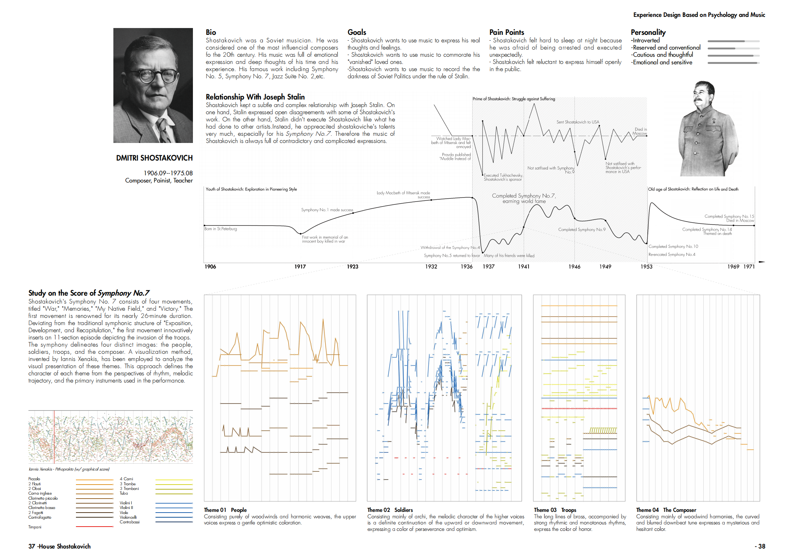
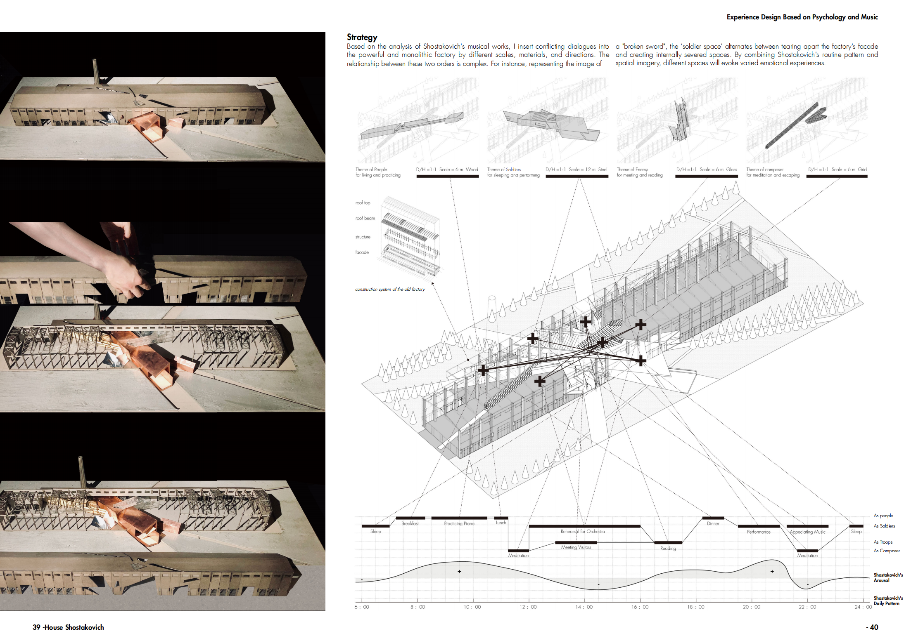
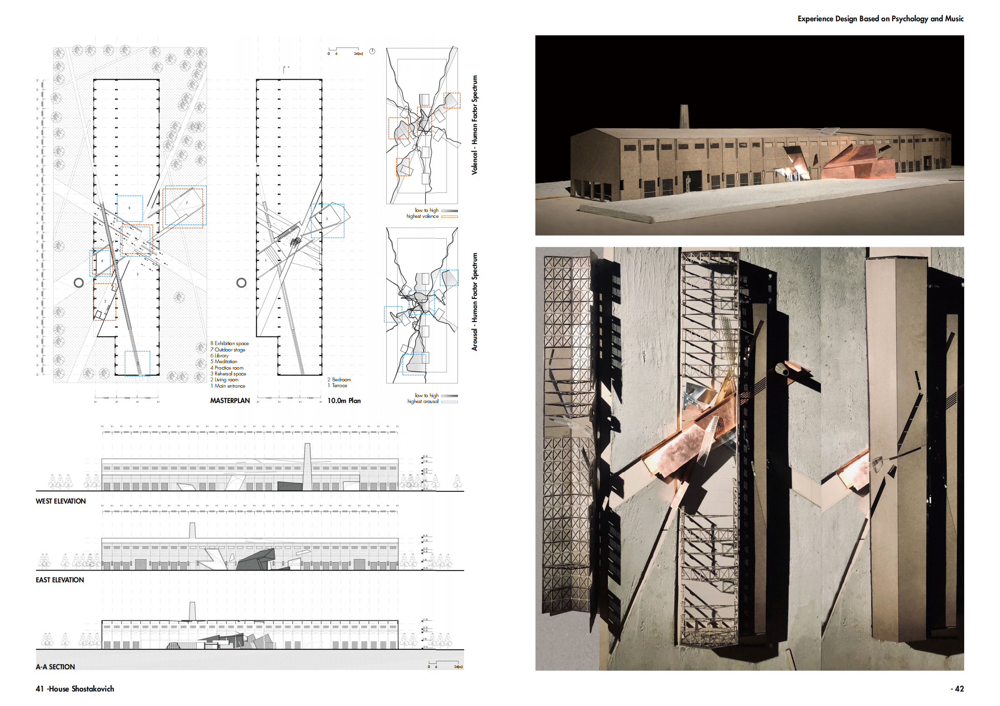
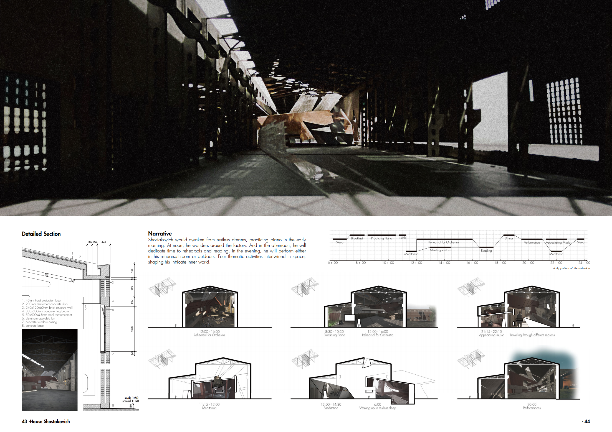
肖斯塔科维奇空间
-
项目任务书要求设计师选择历史上的一个名人。并在当下北京的城市空间内选择一处基地进行个性化空间设计。
1.选址
我选择了前苏联音乐家肖斯塔科维奇。通过对肖氏生平的深入理解，我从肖氏与斯大林的微妙关系出发，将空间地址选在了北京一处荒废的重型机械厂房内。厂房原有粗壮、超越个人尺度的结构件，序列严整的空间秩序与斯大林肃杀的统治风格形成了很好的呼应。
2.旋律可视化研究
通过对肖斯塔科维奇最具影响力和争议性作品《肖斯塔科维奇第七交响曲》的研究，我利用Iannis Xenakis的可视化方法，将不同乐器的旋律走向进行可视化。确定了肖斯塔科维奇空间的四大表现主题：人民，战士，军队，作曲家。并利用音乐旋律线和音色确定了不同空间的体验感受。
3.时空体验旅程图
在确定了空间主题之后，我将四大空间主题按照不同的空间大小、形状、方向和材质插入了原有厂房空间当中，并由此构建出不同时间段主要使用空间的光线来向以及人可能的行为，完成了对人在空间中体验内容的设计和掌控。
4.实体模型制作
我独立利用灰色卡板激光雕刻，配合后期上色，混凝土浇筑，采用真实铜片材料等方法独立制作了1：100的实体模型（长约1.2m，宽0.6m）。该作品被评选为清华大学建筑学院优秀学生作业。 -
设计类型：体验设计，建筑设计
项目类型：清华大学建筑学院大师班作业
时间: 2021.2-2021.5
指导: 李冀, 原地建筑
合作: 独立完成
主要贡献：
1.独立开展文献综述，选定场地基址并进行3D建模；
2.对肖斯塔科维奇第七交响曲五线谱按照Iannis Xenakis方法进行可视化表达并确定4大主题空间；
3.综合文献综述及可视化结果为使用者体验进行时间、空间体验旅程图设计；
4.独立利用激光雕刻、水泥浇筑等手段制作1：100建筑实体模型.
获奖: 清华大学建筑学院优留作业
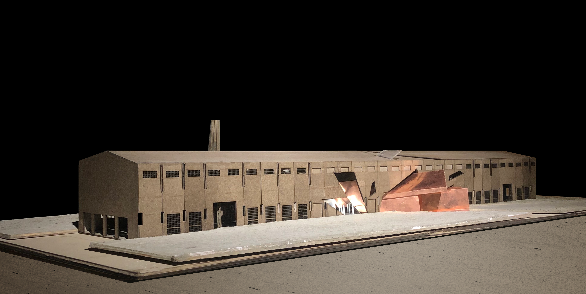
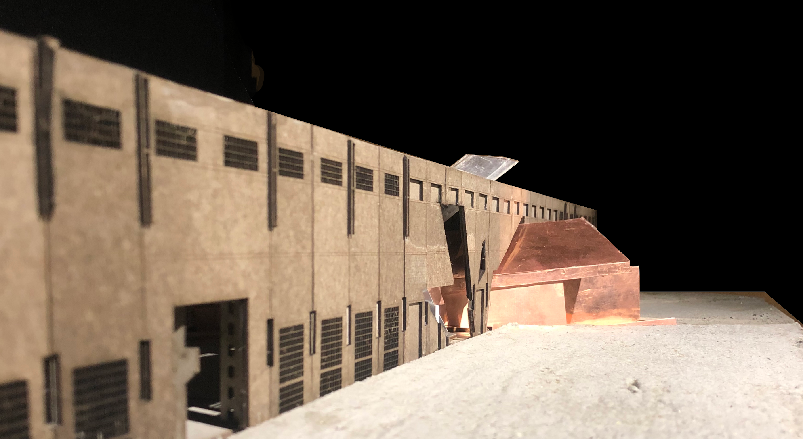
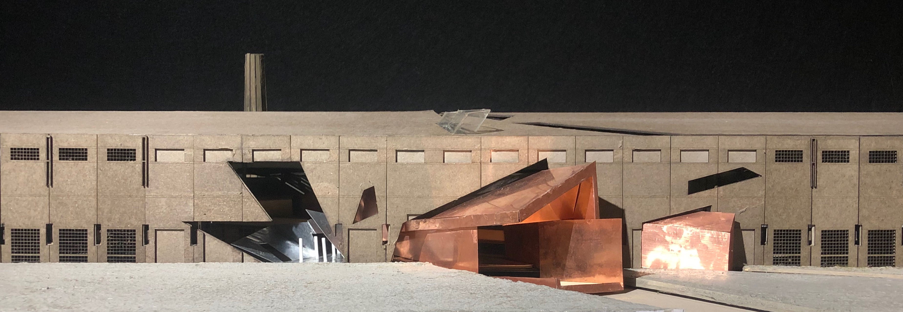
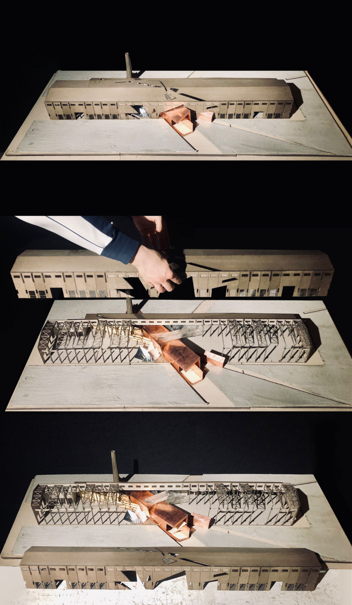
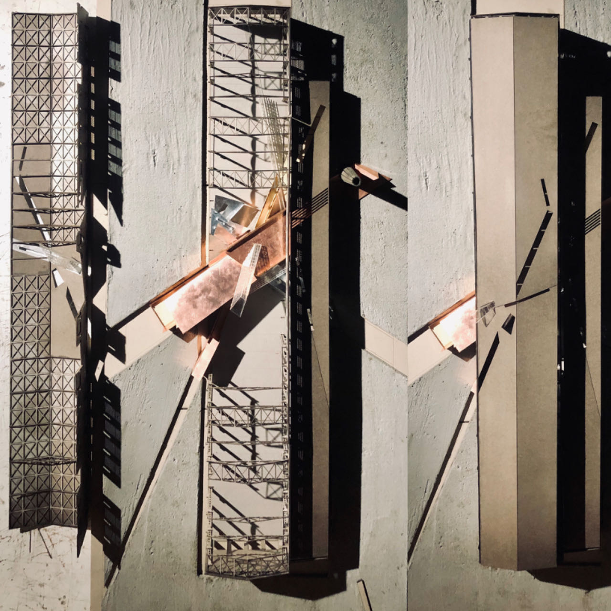
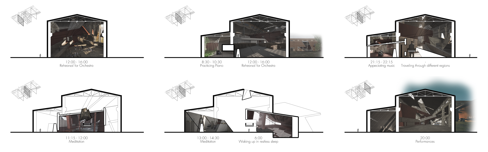
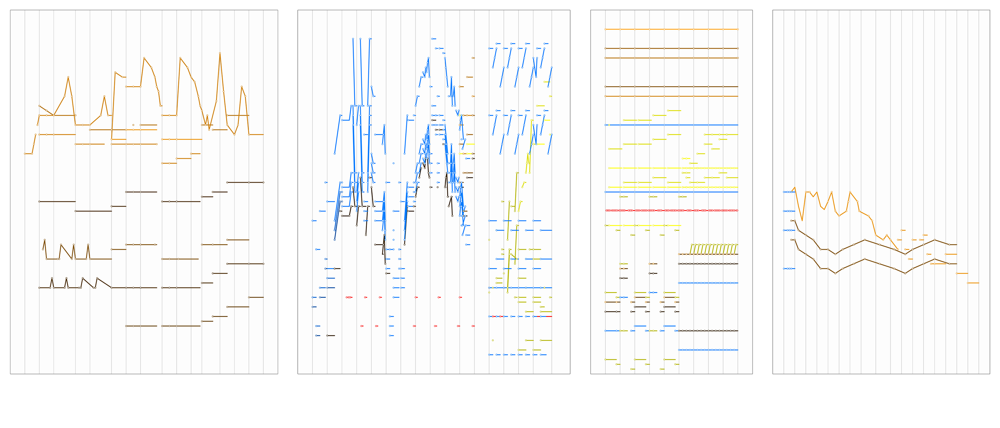
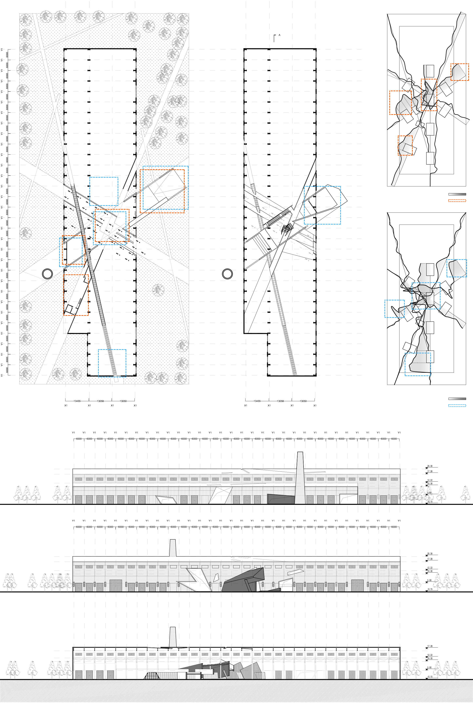
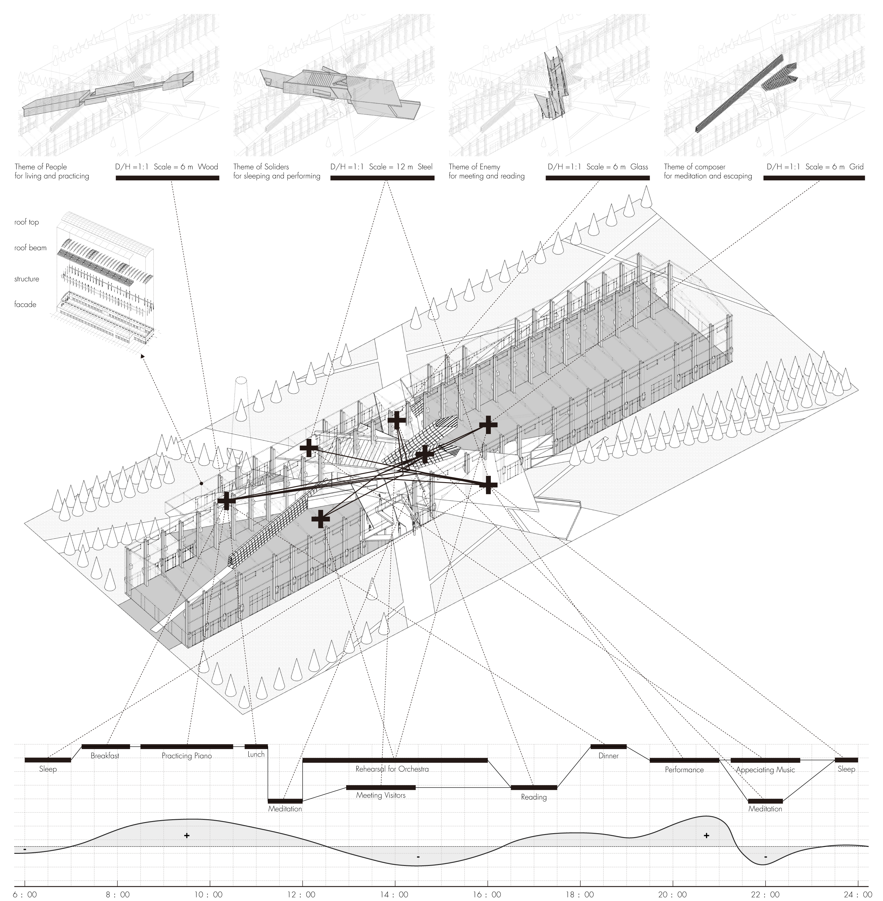